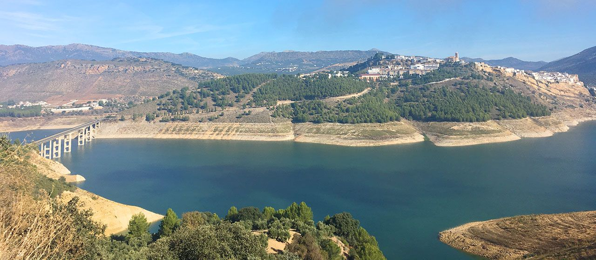

Actividad 3: Estudio de la evolución reciente del embalse de Iznajar.
- Duración:
- 2 sesiones
- Agrupamiento:
- Parejas / Individual

El embalse de Iznajar es el segundo embalse mas grande de Andalucía y uno de los mas grandes de España. De esta inmensa reserva de agua alimentada por el río Genil, se aprovisionan una buena parte de los pueblos del sur de la provincia de Córdoba, incluida Lucena. Además sus aguas van a permitir el regadío de muchas hectáreas de cultivos andaluces.
LEE CON ATENCIÓN:
En la presente actividad deberás realizar un estudio sobre la evolución en los últimos años de la cantidad de agua de este embalse. Para ello deberás realizar una tarea cuyo resultado deberás incluir en tu dossier sobre el agua.
Evolución del agua embalsada en Iznajar
Elaborar una gráfica de forma manual con la variación de la cantidad de agua embalsada en los últimos 10 años. Aqui tienes una buena fuente de información para llevarlo a cabo:
Agua embalsada Iznajar (Fuente: Boletín Hidrológico del Ministerio para la Transición Ecológica)